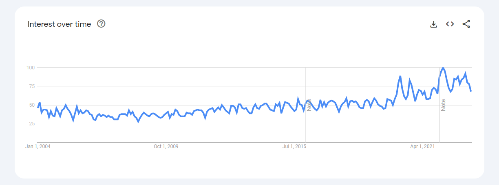
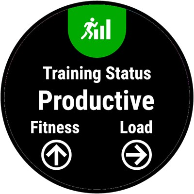

Courtesy of Google Search TrendsLets talk about this time-series whose trend is as predictable as the S&P 500. Whatever it is, it has been consistently trending upwards and chances are, that won’t change anytime soon. What you’re looking at is global interest in the word productive for as long as we’ve had data. Turns out productivity is top of mind whether we are in a recession or a global pandemic. I’m not immune either; Few things excite me as much as ticking off TODOs or Garmin validating my training status.

While not all of us are productivity junkies, there are several reasons we have to care about productivity. Once upon a time, productivity was not optional; our survival depended on it. Without the buffer of technology, everything from sustenance to sanitation had to be done from first principles. Even though we can afford to be less productive today, our lizard brain hasn’t caught on yet. In addition to survival instincts, lizard brain also comes with needs. We always ’need’ more: more money, more bragging rights, more stuff; In a capitalist society, these ’needs’ are served by getting more done. So yeah, the lizard brain favors productivity but that aside, we also have a modern brain that finds purpose and fulfillment in meaningful work.
Truth is, productivity is intrinsically good and our attempts to maximize it are justified. Question is, how do we get to be (more) productive? To answer that we first need to agree on what is and isn’t productivity. In my humble opinion, productivity is not doing everything, everywhere all at once. It’s not accounting for every single second of every day or burning through tasks like a robot. Its not about attaining perfectionism or sacrificing wellbeing for more stuff. I personally define productivity as getting priorities done as efficiently as possible. Although its doable in theory, several reasons complicate its implementation.
- Priorities aren’t always clear.
Its rare that we know what needs to be done from the start. Complex problems require experimenting, procrastinating and meandering. Eureka moments only happen after sitting on them for a while. I can say that about a lot of things including writing this article. Such is the nature of meaningful work, in which case inefficiency is innevitable.
- Control
A lot of things are out of our control when trying to accomplish anything of importance. You have to bring other people onboard and hope their priorities do not contradict yours. Sometimes you need other forces to cooperate: markets, the weather, even your very own lizard brain. You can only do your best while trying to get the stars to align.
- Priorities change over time.
Even after settling on a few priorities, some will never see light of the day because priorities change as we evolve. Getting better at road navigation was a worthy pursuit decades ago, but maps technology has made it completely obsolete. That’s fine because productivity was never meant to be an end in itself.
That said, productivity is not a state to arrive at but something we can incrementally improve on. We can still improve on areas within our control. Here are tips that work for me.
- Alignment of time, energy and priorities.
I will say it again, productivity is not about doing all the things. You can do a lot of things in a day that are objectively good. Yes, it is possible to do a killer workout, do a great job, develop your artistic talents and be social all in one day. Question is: Is all that aligned with your priorities? If its not then you’re just wandering aimlessly. Toni Morisson among many accomplished authors had a habit of waking up at 4am to write. She did that to tackle her first priority wheh she had the most energy and least interruptions. It isn’t just the act of waking up early that made her productive. It was the commitment she made to sleep early, forego other activities and set up the right environment so that rain or shine writing got done. Without goals its easy to get sucked into the priorities of other people and organizations; that is all well and good as long as they are aligned with yours. Otherwise, you’ll look back and wonder where the time went.
- Rest
As controversial as it sounds but I measure productivity by the quality of rest. By rest I mean completely disengaging without stressing about how much still needs to get done. Show me a well-rested person and I see a productive person who understands the importance of recovery and proactively plans for it. I, for one, take my recovery days from running religiously; not only does it give a nice reset but has substantially improved my running economy.
- Identity
We don’t talk enough about how identity improves productivity. Here is the formular: priorities creates an identity which leads to consistent branding which opens doors to the right opportunities. My identity as a morning runner saves me energy and willpower when deciding when or if I should go for a run. This identity is reinforced the more I do it. That also means I have an automatic responce when invited to evening runs and I can easily connect with other morning runners. I think of identity as a shortcut to bring other people onboard.
Let me conclude with a painting from 1896. It was a time when machines were increasingly replacing human power and that freed up a lot of time.
“A study in white” by Antonio Rizzi
Here we see a girl laying on the couch, studying. Lots of material to read from but she’s not in it; here eyes are elsewhere and so is her mind. We don’t know whats going on in her head but in my opinion she looks bored. Even though she has material security, her newly found free time is devoid of meaning. The same can be said about a lot of us especially in the developed world. We sacrifice a lot for work which only begets more work and more sacrifices. I believe striving for productivity will make the world a better place; if anything it will nudge us to make best use of the little time we have on this planet.